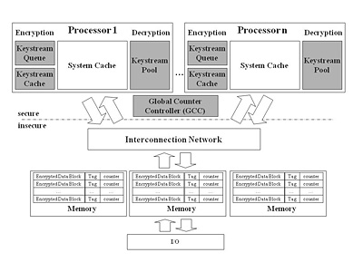
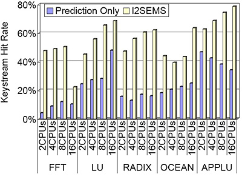

Secure Cluster System Design
High Performance Computing Laboratory
Recent malicious attacks to many research/commercial servers have made protection and security essential requirements in all computer systems.
There are two types of possible attacks: software and physical attacks. Software attacks exploit software vulnerabilities of the operating system (OS)
and server applications such as web and database services. Physical attacks capture or modify data from the system memory or system bus through
external devices physically attached to the system. To mitigate the physical attacks, memory encryption and authentication have been widely
investigated for uniprocessor systems. However, the uniprocessor security models are not sufficient to design secure multiprocessor/cluster systems
due to the absence of efficient cache-to-cache/node-to-node communication protection. Hence, we explore various security issues possible in
multiprocessor/cluster systems and propose mechanisms for architectural support to enhance security.
Security Enhanced Shared Memory Multiprocessor Systems
Protection and security are becoming essential requirements in commercial servers. We present a fast and efficient method for providing secure
memory and cache-to-cache communications in shared memory multiprocessor systems that are becoming enormously popular in designing servers for
various applications. Since our scheme is independent of underlying interconnects and cache coherence protocols, we refer to it as
Interconnects-Independent Security Enhanced Shared Memory Multiprocessor Systems (I2SEMS). The main challenge in designing I2SEMS is
how to precompute keystreams in a timely manner, which is critical to minimize performance overhead. We achieve this goal by adopting a single
system-wide Global Counter Controller (GCC) and three additional components for each processor: a keystream queue, a keystream cache, and a keystream pool.
Simulation results show that the overall performance slowdown is 4% on average and the keystream hit rate is as high as 78%.
The stable keystream hit rate shows that I2SEMS works well with both memory-read and memory-write dominant applications.
Therefore, we expect I2SEMS to enhance security of shared memory multiprocessor systems with marginal performance overhead.
|  |
 |
| Security Model | I2SEMS Prediction Correctness |
Security Framework for InfiniBand Architecture
The InfiniBand Architecture (IBA) is a promising communication standard for building clusters and system area networks.
However, the IBA specification has left out security aspects, resulting in potential security vulnerabilities,
which could be exploited with moderate effort. In this research, we provide a comprehensive security framework for
IBA by first looking into these vulnerabilities from three classical security aspects (confidentiality, authentication, and availability.
Then, we investigate the following security issues. First, as groundwork for secure services in IBA, we present partition-level
and queue-pair-level key management schemes, both of which can be easily integrated into IBA. Second, for confidentiality and
authentication, we present a method to incorporate a scalable encryption and authentication algorithm into IBA, with little
performance overhead. Third, for better availability, we propose a stateful ingress filtering mechanism to block denial-of-service
(DoS) attacks. Finally, to further improve the availability, we provide a scalable packet marking method tracing back DoS attacks.
Simulation results of an IBA network show that the security performance overhead due to encryption/authentication on network latency
ranges from 0.7 percent to 12.4 percent. As a pioneering work in architectural support for secure cluster systems, the security frame
for IBA is expected to be used as a guideline to develop general secure cluster systems.
 |
 |
| Partition-Level Key Management Scheme | Network Delay for Stateful Ingress Filtering |
Papers
|